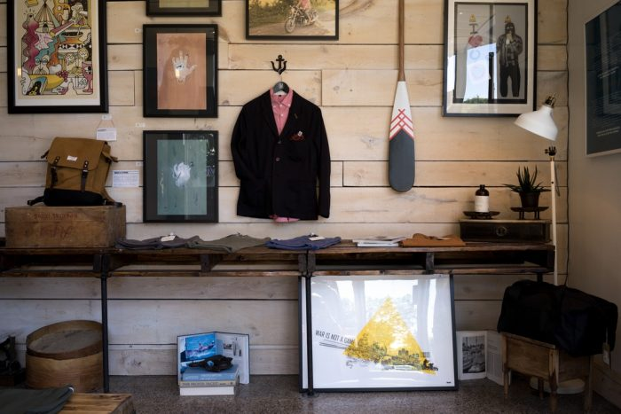

書くためのテーマ
吾輩は猫である。名前はまだ無い。どこで生れたかとんと見当がつかぬ。何でも薄暗いじめじめした所でニャーニャー泣いていた事だけは記憶している。吾輩はここで始めて人間というものを見た。
しかもあとで聞くとそれは書生という人間中で一番獰悪な種族であったそうだ。この書生というのは時々我々を捕えて煮て食うという話である。しかしその当時は何という考もなかったから別段恐しいとも思わなかった。ただ彼の掌に載せられてスーと持ち上げられた時何だかフワフワした感じがあったばかりである。掌の上で少し落ちついて書生の顔を見たのがいわゆる人間というものの見始であろう。
この時妙なものだと思った感じが今でも残っている。第一毛をもって装飾されべきはずの顔がつるつるしてまるで薬缶だ。その後猫にもだいぶ逢ったがこんな片輪には一度も出会わした事がない。のみならず顔の真中があまりに突起している。そうしてその穴の中から時々ぷうぷうと煙を吹く。どうも咽せぽくて実に弱った。これが人間の飲む煙草というものである事はようやくこの頃知った。この書生の掌の裏でしばらくはよい心持に坐っておったが、しばらくすると非常な速力で運転し始めた。
吾輩は藁の上から急に笹原の中へ棄てられたのである。ようやくの思いで笹原を這い出すと向うに大きな池がある。吾輩は池の前に坐ってどうしたらよかろうと考えて見た。別にこれという分別も出ない。しばらくして泣いたら書生がまた迎に来てくれるかと考え付いた。ニャー、ニャーと試みにやって見たが誰も来ない。そのうち池の上をさらさらと風が渡って日が暮れかかる。腹が非常に減って来た。泣きたくても声が出ない。
仕方がない、何でもよいから食物のある所まであるこうと決心をしてそろりそろりと池を左りに廻り始めた。どうも非常に苦しい。そこを我慢して無理やりに這って行くとようやくの事で何となく人間臭い所へ出た。ここへ這入ったら、どうにかなると思って竹垣の崩れた穴から、とある邸内にもぐり込んだ。縁は不思議なもので、もしこの竹垣が破れていなかったなら、吾輩はついに路傍に餓死したかも知れんのである。一樹の蔭とはよく云ったものだ。この垣根の穴は今日に至るまで吾輩が隣家の三毛を訪問する時の通路になっている。